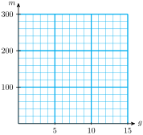
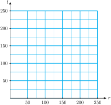
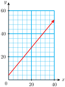
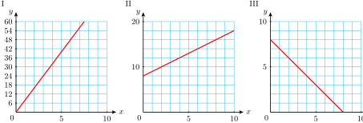
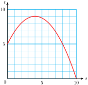
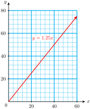
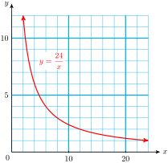

interest \(=\) principal \(\times\) interest rate \(\times\) time \(~~~~~~\blert{I=Prt}\)
part \(=\) percentage rate \(\times\) whole \(~~~~~~\blert{P=rW}\)
average score \(= \dfrac{\text{sum of scores}}{\text{number of scores}}\)\(~~~~~~\blert{A=\dfrac{S}{n}}\)
SubsectionLesson 1.3 Equations and Graphs
A graph is a way of visualizing an algebraic equation in two variables. The first or input variable is displayed on the horizontal axis and the second or output variable is displayed on the vertical axis.
Each point on a graph has two coordinates, which designate the position of the point.
An ordered pair of numbers that make an equation true is called a solution of the equation. Each point on the graph of an equation represents a solution of the equation.
If the variables in an equation have very large (or very small) values, we must choose scales for the axes that fit these values.
To graph an equation.
Make a table of values.
Choose scales for the axes.
Plot the points and connect them with a smooth curve.
We can use a graph to evaluate an algebraic expression or to solve an equation.
SubsectionLesson 1.4 Solving Equations
To solve an equation algebraically, we use inverse, or opposite, operations.
To solve an equation algebraically.
Ask yourself what operation has been performed on the variable.
Perform the opposite operation on both sides of the equation in order to isolate the variable.
Operations for solving an equation.
We can add or subtract the same number from both sides.
We can multiply or divide both sides by the same number, as long as that number is not zero.
Properties of Equality.
If the same quantity is added to or subtracted from both sides of an equation, the solution is unchanged. In symbols,
Multiplication: If \(a, b\) and \(c\) are any numbers, then
\begin{equation*}
\blert{(a \cdot b) \cdot c = a \cdot (b \cdot c)}
\end{equation*}
The associative laws do not hold for subtraction or division.
Order of Operations.
First, perform any operations that appear inside parentheses, or above or below a fraction bar.
Next, perform all multiplications and divisions in order from left to right.
Finally, perform all additions and subtractions in order from left to right.
When using a calculator, you must enclose in parentheses any expression that appears above or below a fraction bar.
SubsectionReview Questions
Use complete sentences to answer the questions.
What is a variable? Give an example.
What is the difference between an algebraic expression and an equation?
Write as an algebraic expression "\(p\) subtracted from \(w\text{.}\)"
Evaluate your expression for \(p=5.6\) and \(w=56\text{.}\)
Write as an algebraic expression "\(m\) divided by \(g\text{.}\)"
Evaluate your expression for \(m=12\) and \(g=192\text{.}\)
State a formula from this chapter for each of the variables below.
Distance: \(~~d=\)
Profit: \(~~P=\)
Interest: \(~~I=\)
Percentage or part: \(~~P=\)
Average value: \(~~A=\)
State formulas for the perimeter and area of a rectangle, and for the area and circumference of a circle.
When we construct the graph of an equation, which variable is displayed on which axis?
Write a paragraph explaining how the following terms are related to an equation in two variables: solution, coordinates, ordered pair.
State the order of operations for simplifying algebraic expressions.
SubsectionReview Problems
ExercisesExercises
1.
Martha can travel 22 miles on a gallon of gasoline. Fill in the table with the distance Martha can drive on various amounts of gasoline.
Gallons of gas
\(3\)
\(5\)
\(8\)
\(10\)
\(11\)
\(12\)
Calculation
\(\hphantom{00}\)
\(\hphantom{00}\)
\(\hphantom{00}\)
\(\hphantom{00}\)
\(\hphantom{00}\)
\(\hphantom{00}\)
Miles driven
\(\hphantom{00}\)
\(\hphantom{00}\)
\(\hphantom{00}\)
\(\hphantom{00}\)
\(\hphantom{00}\)
\(\hphantom{00}\)
Explain in words how to find the distance Martha can drive.
Write your explanation as a mathematical sentence:
\(\text{Miles driven} = \)
Let \(g\) stand for the number of gallons of gas in Martha’s car and \(m\) for the number of miles she can drive. Write an equation for \(m\) in terms of \(g\text{.}\)
Use the grid below to plot the values from your table. Connect the data points with a smooth curve.

2.
Mariel has a 200-page history assignment to read. Fill in the table with the number of pages Mariel has left to read after completing a certain number of pages.
Pages read
\(20\)
\(50\)
\(85\)
\(110\)
\(135\)
\(180\)
Calculation
\(\hphantom{00}\)
\(\hphantom{00}\)
\(\hphantom{00}\)
\(\hphantom{00}\)
\(\hphantom{00}\)
\(\hphantom{00}\)
Pages left
\(\hphantom{00}\)
\(\hphantom{00}\)
\(\hphantom{00}\)
\(\hphantom{00}\)
\(\hphantom{00}\)
\(\hphantom{00}\)
Explain in words how to find the number of pages left to read.
Write your explanation as a mathematical sentence:
\(\text{Pages left} = \)
Let \(r\) stand for the number of pages Mariel has already read and \(l\) for the number of pages she has left to read. Write an equation for \(l\) in terms of \(r\text{.}\)
Use the grid below to plot the values from your table. Connect the data points with a smooth curve.

3.
Find the pattern and fill in the table. Then write an equation for the second variable in terms of the first.
\(~x~\)
\(0.5\)
\(1.0\)
\(1.5\)
\(2.0\)
\(4.0\)
\(6.0\)
\(7.5\)
\(~y~\)
\(0.125\)
\(0.25\)
\(0.375\)
\(0.5\)
\(\hphantom{00}\)
\(\hphantom{00}\)
\(\hphantom{00}\)
4.
Use the graph to fill in the table. Then write an equation for the second variable in terms of the first.
\(~x~\)
\(\hphantom{00}\)
\(\hphantom{00}\)
\(\hphantom{00}\)
\(\hphantom{00}\)
\(\hphantom{00}\)
\(~y~\)
\(\hphantom{00}\)
\(\hphantom{00}\)
\(\hphantom{00}\)
\(\hphantom{00}\)
\(\hphantom{00}\)

Exercise Group.
For Problems 5–12, write an algebraic expression for the phrase.
5.
Five greater than \(z\)
6.
28% of \(t\)
7.
Sixty dollars less than first-class air fare
8.
The quotient of the volume of the sphere and 6
9.
Six degrees hotter than yesterday’s temperature
10.
The cost of the gasoline divided three ways
11.
8% of the total bill
12.
Five inches less than the height of the triangle
13.
Write an expression for the distance traveled in \(t\) seconds by a car moving at 88 feet per second.
How far will the car travel in 5 seconds? In half a second? In half a minute?
14.
Write an expression for the distance you can travel in 3 hours at a speed of \(r\) miles per hour.
How far can you travel in 3 hours on a bicycle at a speed of 6 miles per hour? On a motorboat at a speed of 20 miles per hour?
15.
Write an expression for the amount of interest earned in \(t\) years by $500 deposited in an account that pays 7% annual interest.
How much interest will the account earn after 1 year? After 2 years? After 5 years?
16.
Write an expression for the amount of interest earned in two years by $1500 deposited in an account that pays interest rate \(r\text{.}\)
How much interest will the money earn at 6% interest? At 8.3% interest?
17.
Rachel has saved $60 to help pay for her books this semester. Let \(b\) stand for the price of her books, and \(n\) for the amount she still needs.
Write an equation for \(n\) in terms of \(b\text{.}\)
Fill in the table.
\(~n~\)
\(100\)
\(120\)
\(150\)
\(180\)
\(200\)
\(~b~\)
\(\hphantom{00}\)
\(\hphantom{00}\)
\(\hphantom{00}\)
\(\hphantom{00}\)
\(\hphantom{00}\)
Choose appropriate scales for the axes and graph your equation.
18.
Matt wants to travel 360 miles to visit a friend over spring break. He is deciding whether to ride his bike or drive. If he travels at an average speed of \(r\) miles per hour, then the trip will take \(t\) hours, where \(t=\dfrac{360}{r}\text{.}\)
Fill in the table.
\(~r~\)
\(10\)
\(20\)
\(30\)
\(40\)
\(60\)
\(80\)
\(90\)
\(~t~\)
\(\hphantom{00}\)
\(\hphantom{00}\)
\(\hphantom{00}\)
\(\hphantom{00}\)
\(\hphantom{00}\)
\(\hphantom{00}\)
\(\hphantom{00}\)
Choose appropriate scales for the axes and graph your equation.
19.
On a typical evening, there are twice as many non-smokers as smokers in a popular restaurant.
Write an equation for the number of non-smokers, \(n\text{,}\) in terms of the number of smokers, \(s\text{.}\)
Make a table of values and graph your equation.
20.
Match each equation with its graph.
\(\displaystyle y=8-x\)
\(\displaystyle y=x+8\)
\(\displaystyle y=8x\)

21.
Decide which ordered pairs are solutions of the equation \(~y=\dfrac{5}{2}x\text{.}\)
\(\displaystyle (4,10)\)
\(\displaystyle (5,2)\)
\(\displaystyle (1.8,4.5)\)
\(\displaystyle (3,7.5)\)
22.
Decide which ordered pairs are solutions of the equation whose graph is shown.
\(\displaystyle (5,0)\)
\(\displaystyle (2,8)\)
\(\displaystyle (8,3)\)
\(\displaystyle (6,8)\)

Exercise Group.
For Problems 23–24, decide whether the given values are solutions of the equation.
23.
\(~\dfrac{t}{6}=3\)
\(\displaystyle t=18\)
\(\displaystyle t=2\)
24.
\(~8x=36.8\)
\(\displaystyle z=28.8\)
\(\displaystyle z=4.6\)
Exercise Group.
For Problems 25–30, solve the equation.
25.
\(12=3+y\)
26.
\(2.7=t-1.8\)
27.
\(12.2a=4.88\)
28.
\(8=\dfrac{y}{4}\)
29.
\(\dfrac{w}{2}=0\)
30.
\(9.5=\dfrac{b}{0.6}\)
Exercise Group.
For Problems 31–32, solve the equation graphically.
31.
The graph of \(y=1.25x\) is shown at right. Use the graph to solve each equation.
\(\displaystyle 1.25x=40\)
\(\displaystyle 30=1.25x\)

32.
The graph of\(~y=\dfrac{24}{x}\) is shown at right. Use the graph to solve each equation.
\(\displaystyle \dfrac{24}{x}=6\)
\(\displaystyle 1.5=\dfrac{24}{x}\)

Exercise Group.
For Problems 33–38, write and solve an equation to answer the question.
33.
Staci invested some money in a T-bill account that pays 9% interest, and 1 year later the account had earned $171 interest. How much did Staci deposit in the T-bill?
34.
A jet flew 2800 miles at a speed of 560 miles per hour. How long did the trip take?
35.
Fifty-three percent of the electorate voted for candidate Phil I. Buster. If candidate Buster received 106,000 votes, how many people voted?
36.
Salim’s test average was 3.2 points below the minimum grade for an A. If Salim’s average was 89.3, what grade was required for an A?
37.
Ivan has a new puppy whose adult weight will be about 85 pounds. When the ratio of the puppy’s weight to its adult weight is 0.7, Ivan should take the puppy to the vet for shots. How much will the puppy weight when it is ready for shots?
38.
If a rectangular garden plot is 12 feet wide, how long must it be to provide 180 square feet of gardening space?
Exercise Group.
For Problems 39–42, simplify by following the order of operations.
For Problems 43–46, write an algebraic expression for the phrase.
43.
Four pages longer than half the length of the first draft
44.
$100 short of twice last year’s price
45.
Three times the sum of the length and 5.6
46.
73% of the difference of Robin’s weight and 100 pounds
Exercise Group.
For Problems 47–50, evaluate for the given values.
47.
\(mx+b~~~\) for \(~~~m=\dfrac{1}{2}, x=3, b=\dfrac{5}{2}\)
48.
\(\dfrac{1}{m}-\dfrac{1}{n}~~~\) for \(m=4, n=6\)
49.
\(\dfrac{3w+z}{z}~~~\) for \(~~~w=8, z=6\)
50.
\(2(l+w)~~~\) for \(~~~l=\dfrac{1}{3}, w=\dfrac{1}{6}\)
51.
The total amount of money in an account is given by \(~P(1+rt)~\text{,}\) where \(P\) is the initial investment, \(r\) is the interest rate, and \(t\) is the number of years the money has been in the account. How much money is in an account that earns 10% interest if $1000 was invested 3 years ago?
52.
If an object is thrown downwards with initial speed \(v\text{,}\) then after \(t\) seconds it will fall a distance given in feet by \(~t(16t+v)\text{.}\) How far will a penny fall in 2 seconds if it is thrown at a speed of 10 feet per second?